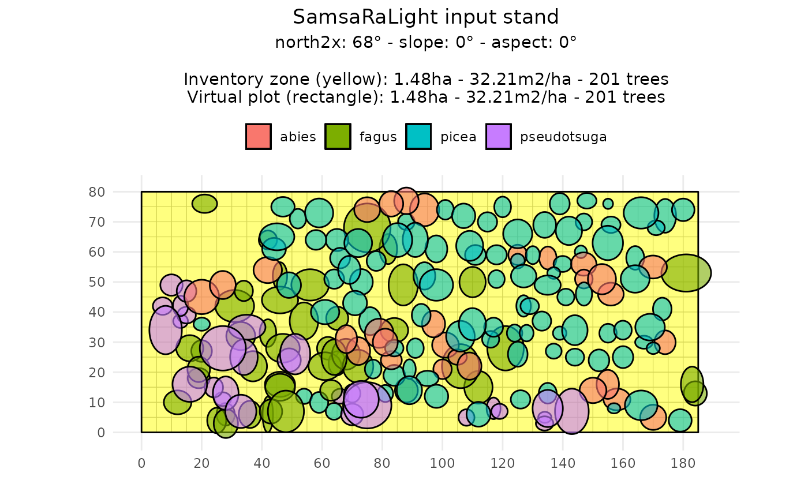
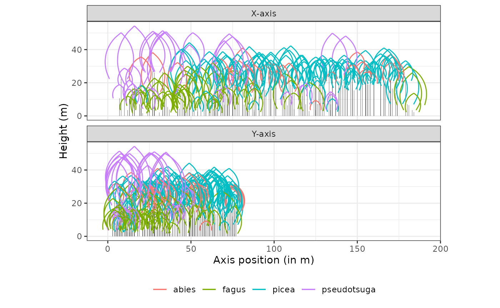
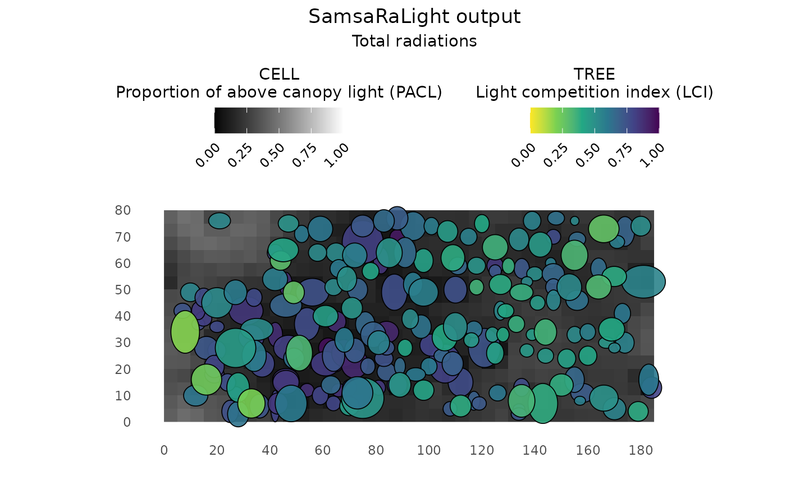
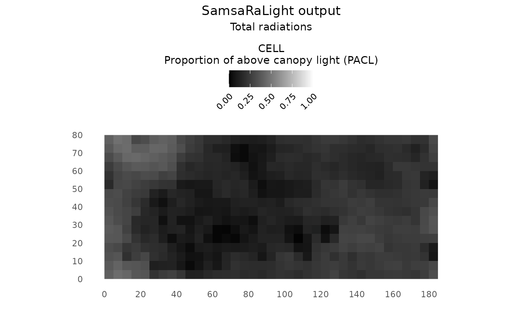

3 - More complex crown shapes
Represent tree crowns with asymmetric and vertically structured shapes
3-complex_crowns.Rmd
library(SamsaRaLight)
library(dplyr)
#>
#> Attaching package: 'dplyr'
#> The following objects are masked from 'package:stats':
#>
#> filter, lag
#> The following objects are masked from 'package:base':
#>
#> intersect, setdiff, setequal, unionIntroduction
In previous tutorials, tree crowns were represented using simple symmetric shapes (“E” and “P”). However, real tree crowns are often asymmetric, both horizontally (different crown radii in different directions) and vertically (maximum crown width not located at mid-crown for “E” nor crown base height for “P”).
This tutorial explains how SamsaRaLight represents more realistic crown geometries using composite crown shapes, and illustrates their use on a real forest inventory.
Crown shapes available in SamsaRaLight
SamsaRaLight supports the following crown types:
"E", "P", "2E", "4P", "8E". The number indicates how many
crown parts are used. The letter indicates the geometric shape
(Ellipsoid or Paraboloid). Choose the simplest crown type that matches
your data quality.
Symmetric crown shapes
Symetric shapes used in the Tutorial 1, defined by the mean crown
radius (mean of the four radius rn_m, rs_m,
re_m and rw_m) and the crown depth (computed
as h_m - hbase_m. These shapes are simple and efficient,
but cannot represent crown asymmetry, knowing that crown asymmetry
strongly affects light interception.
Asymmetric crown shapes
More complex shapes are created by splitting the crown into multiple geometric parts.
“2E” — Vertical asymmetry
Crown split into an upper and a lower ellipsoid
Allows vertical asymmetry
Requires
hmax_m, the height of maximum crown radius
Crown remains horizontally symmetric. Use this shape when crown expansion is not centered vertically.
“4P” — Horizontal asymmetry
Crown split into four horizontal paraboloids
Different radii allowed in the four cardinal directions:
rn_m(north),rs_m(south),re_m(east) andrw_m(west)Crown is vertically symmetric:
hmax_mis NOT required (paraboloid, thushmax = hbase_m)
Use this shape when crowns are laterally deformed by competition.
Example: asymmetric crowns in a real stand
Context and data
We illustrate asymmetric crowns using the Bechefa
marteloscope, stored in the package as
SamsaRaLight::data_bechefa.
This marteloscope was installed in Belgian Ardennes by Gauthier Ligot in the scope of the IRRES project, which investigates the transition from even-aged to uneven-aged forest management. This is a mature mixed stand of Douglas fir and spruce in the Belgian Ardennes. The stand has been uneven-aged for more than 10 years.
Tree inventory
All trees use the "8E" crown type, allowing both
horizontal and vertical asymmetry. Each tree provides four directional
crown radii (rn_m, rs_m, re_m,
rw_m) and the height of maximum crown expansion
(hmax_m).
head(SamsaRaLight::data_bechefa$trees)
#> # A tibble: 6 × 16
#> id_tree species x y z dbh_cm crown_type h_m hbase_m hmax_m rn_m
#> <dbl> <chr> <dbl> <dbl> <dbl> <dbl> <chr> <dbl> <dbl> <dbl> <dbl>
#> 1 103 abies 150. 13.9 0 68.4 8E 38.5 16.6 28.2 4.32
#> 2 615 pseudo… 51.0 26.0 0 95.5 8E 50.2 14 33.3 7.01
#> 3 102 pseudo… 143. 6.97 0 112. 8E 48.2 10.8 27.1 8.38
#> 4 708 pseudo… 27.0 28.0 0 117. 8E 51 15.8 27 7.37
#> 5 707 pseudo… 34.0 25.0 0 99.9 8E 50.5 16 26.7 6.73
#> 6 712 pseudo… 33.0 6.99 0 112. 8E 51.4 14.4 26.5 5.02
#> # ℹ 5 more variables: rs_m <dbl>, re_m <dbl>, rw_m <dbl>, crown_openness <dbl>,
#> # crown_lad <dbl>Create the stand and run the model
The newt steps remain the same as when using symmetric crowns (see Tutorial 1). Considering asymmetric crowns only needs to adapt the initial tree inventory. Horizontal asymmetry is visible in the plots, but vertical asymmetry is harder to perceive graphically because crowns are projected.
stand_bechefa <- SamsaRaLight::create_sl_stand(
trees_inv = SamsaRaLight::data_bechefa$trees,
cell_size = 5,
latitude = SamsaRaLight::data_bechefa$info$latitude,
slope = SamsaRaLight::data_bechefa$info$slope,
aspect = SamsaRaLight::data_bechefa$info$aspect,
north2x = SamsaRaLight::data_bechefa$info$north2x,
core_polygon_df = SamsaRaLight::data_bechefa$core_polygon
)
#> Polygon successfully validated.
#> SamsaRaLight stand successfully created.
plot(stand_bechefa)
plot(stand_bechefa, top_down = TRUE)
radiations_bechefa <- SamsaRaLight::get_monthly_radiations(
latitude = SamsaRaLight::data_bechefa$info$latitude,
longitude = SamsaRaLight::data_bechefa$info$longitude)
output_bechefa <- SamsaRaLight::run_sl(
sl_stand = stand_bechefa,
monthly_radiations = radiations_bechefa
)
#> parallel mode disabled because OpenMP was not available
#> SamsaRaLight simulation was run successfully.
plot(output_bechefa)
plot(output_bechefa, show_trees = F)